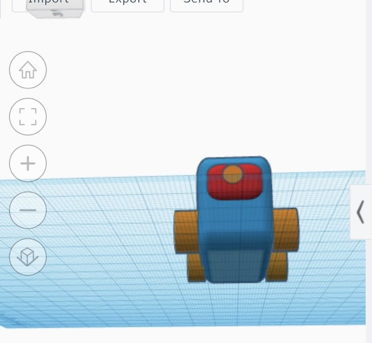
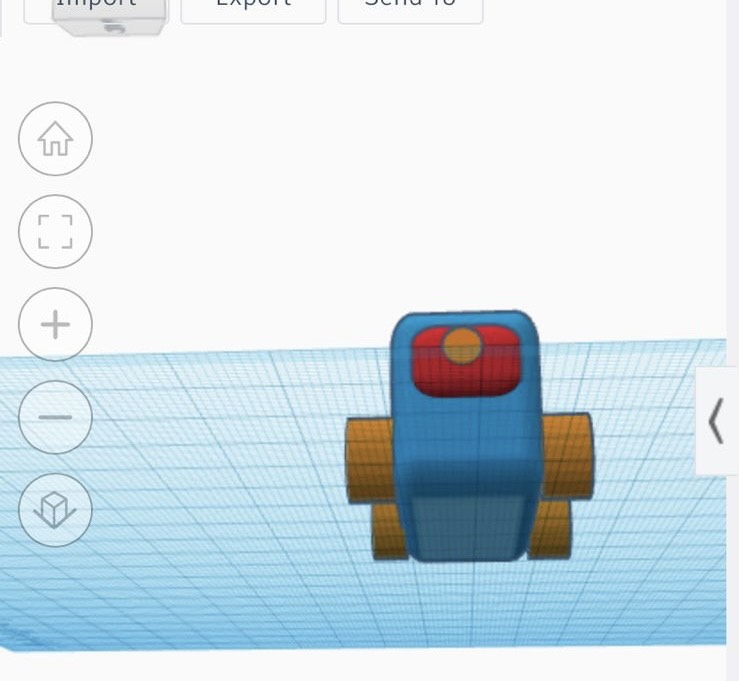

3D Model Robot
To make our robot we first had to come up with an sketch. We had to think about the structure of it, how it was going to function and would actually be useful and comfortable for the customer. We had different ideas but we decided that this one was the best, it is a rounded rectangle shape with a camera and wheels, the wheels help the robot to travel and the camera detects any problems there might be in the person. To make this 3D model we used tinkercad.

 

Learn how to use tinkercad
Learn how to use tinkercad youtube video
Home Page